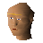

Roavar

| Config name | werewolfinnkeeper |
| NPC id | 1042 |
| Combat level | hidden |
| Options | Talk-to, Trade |
| Wander range | 5 tiles from spawn |
| Area folder | area_canifis |
| Defined in | scripts/areas/area_canifis/configs/canifis.npc |
Roavar
Seems a jolly chap.
Show all 1 spawn on the world map → Open in knowledge graph →
Locations
| Area | Coordinates | Level | Count | Map |
|---|---|---|---|---|
| Canifis | 3493, 3471 | 0 | 1 | view |
Dialogue
PlayerHello there!
RoavarGreetings traveller. Welcome to 'The Hair Of The Dog' Tavern. What can I do you for?
PlayerCan I buy a beer?
RoavarWell that's my speciality! The local brew's named 'Moonlight Mead' and will set you back 5 gold. Whaddya say? Fancy a pint?
PlayerYes please.
PlayerI don't have the money on me right now though... can I start a tab?
RoavarYou see that sign behind me there?
PlayerThe one that says; 'Please Do Not Ask For Credit As Being Attacked By A Large Angry Werewolf Inn Keeper Often Offends'?
RoavarBingo.
RoavarHere ya go pal. Enjoy!
PlayerActually, no thanks.
RoavarEh, suit yourself. You're missing out on a genuine taste experience.
PlayerCan I hear some gossip?
RoavarWell, I dunno... The village is kind of on the fringe out here, I dunno how up to date the stuff I hear about is...
PlayerTell me about this village.
RoavarYou want to know about Canifis? I dunno why, not a lot happens here. We're just your typical everyday down at earth werewolf folk, after all...
PlayerSo... everyone here is a werewolf?
RoavarYep. We are as Zamorak made us!
PlayerYou mentioned Zamorak...
RoavarYeah, he's great isn't he? Every year we hold a big festival to give thanks to Zamorak for keeping us well fed and happy here.
RoavarI hear over in the West they worship Saradomin, but I dunno why! What's he ever done to help out us werewolves, huh?
RoavarI hear he has all these crazy followers who say things like we shouldn't kill people and eat them! What's up with that?
Player...So when is this festival?
RoavarAaaah, not for a good few months yet. Come and ask me again nearer to the time, I'll keep some extra meat and mead back from the rest for ya pal.
PlayerTell me about the land of Morytania.
RoavarWell, I don't know what to tell you really... This village is called Canifis and lies on the border between Morytania and Misthalin... so we're kind of on the front line if those Saradominists to the west ever decide to
Roavarattack us... South East of here is the castle of Lord Drakan, our master.
PlayerLord Drakan? Who is that?
RoavarAhhh... you must be new to these parts if you haven't heard of Lord Drakan! He's the lord of this land, and we all pledge allegiance to him.
RoavarIn return for our allegiance, and the tithe of course, he keeps our land safe from any invaders and the Saradominists who want to kill us all.
PlayerTithe? What do you mean?
RoavarAh, well, in return for his protection, we have to give Lord Drakan a share of blood every week. If we don't have any to spare from our hunts, then we need to pick a member of the village to give their life in return
Roavarfor the blood so that the tithe is fulfilled.
PlayerYou mean you kill someone you know in order to meet the tithe???
RoavarThat's right, but only if we haven't managed to get enough spare blood from our hunts. It's kind of severe if you look at it that way, but frankly, I think the price is fair in return for his protection and his tolerance of
Roavarour village. He could probably kill us all if he wanted us gone, so keeping on his good side is worth the sacrifice to us. Lucky we're not human really!
PlayerWhy's that?
RoavarHe hates humans! Apparently his brother Draynor is trapped in Misthalin, and adventurous little human wannabe-heroes keep trying to kill him!
RoavarHe hates humans! Apparently long ago his brother Draynor was trapped in Misthalin and lost much of his powers, and was recently killed by some human!
RoavarMan, I'd hate to be a human around here, that's for sure. Drakan would really enjoy hunting them down and killing them!
PlayerUh... thanks for the info...
PlayerTell me about the shopkeepers here.
RoavarHmmm? Why, who did you want to hear the gossip about?
PlayerTell me what you know about Sbott the Tanner.
RoavarHey, I won't hear a word said bad about that guy! He's an honest and hard-working wolf if I ever met one! He charges a lot for his job, but he's one of the best tanners I've ever seen - and I'm over four hundred
Roavaryears old! You need stuff tanning, I recommend him!
PlayerKnow anything interesting about Rufus the food seller?
RoavarAh yeah... good old Rufus... He's kind of getting on in years and doesn't like to come out of his wolf form so often, but let me tell you this: that guy is a hunter through and through. You seen how much food he
Roavarcatches a day? That takes real dedication! Some of the young pups think just because a wolf has a bit of grey in his fur then he's past it, but I've seen him put those pups to shame in a hunt! He's a real inspiration to us
Roavarall!
PlayerGot anything to share about Barker the clothes seller?
RoavarEh, I don't like the guy much, but you can't knock the quality of his stock. They're some fine quality threads you can get yourself there.
PlayerWhat's wrong with him?
RoavarEh... I can't really tell you to be honest. Something about the guy just gets my hackles up everytime he opens his yap, know what I mean?
PlayerNo, not really.
RoavarLucky for you. I can't really explain it, I just don't like the guy. Does great clothes though, you got to give him that.
PlayerI bet you have some juicy gossip about Fidelio the general store owner.
RoavarThat nut job? Oh sure, we all know about him. He was a real firebrand daredevil when he was younger, always taking risks to make himself a quick buck... he got himself caught up in the smuggling trade, sneaking over
Roavarthe border into Misthalin and pretending to be a human so he could buy exotic items to sell.
PlayerExotic items? From Misthalin? Like what?
RoavarOh man, you name it! Flour... buckets... tinderboxes... chisels... he could get the lot! He's been doing it so long now though, his nerves are shot.
RoavarNowadays he's a disgrace, he can barely string a sentence together and jumps at his own shadow. Makes you feel ashamed to be a werewolf.
PlayerTell me about the temple to the west.
RoavarWell, I'm not old enough to remember the full story behind it, but it was a terrible day for our kingdom when it was built there.
RoavarApparently Morytania had a once strong kingdom, with lands spreading far further west than they do today, and south into the desert, until the day when a sneak attack by the hated human forces
RoavarSaradomin burned our villages and slaughtered our peoples in mass.
RoavarThey then cursed the river, so that it would burn our kind should we touch it! Can you imagine??? To make an entire river poisonous to us???
RoavarLuckily they seem to have calmed down somewhat recently, and tend to stay on their side of the river... but the wrong they have done my people will never be forgotten, and will never be forgiven. What is worse is
Roavarthat they then had the nerve to build that gigantic statue on the river mouth to mock the slaughter of our people and the poisoning of our river! I can understand Lord Drakan's hatred for them
Roavarit to his extent.
PlayerSo you hate humans too?
RoavarAbsolutely! If I ever met one I would gobble him up where he stands! And then chew the bones for dessert!
Player...Um, okay, thanks, bye.
PlayerCan I hear a story?
RoavarA story??? Heh, well the only one I can think of right now is one my dear old mammy told me as a pup...
RoavarNow how did it go... Ah yes!
RoavarOnce upon a time a brave young wolf was walking through a forest, when he came upon a human dressed all in red. 'Aha!' he thought to himself, 'Here's a nice easy meal!' But the human talked to him, and as he was
Roavaralways taught to be a polite wolf, he spoke back to it.
RoavarWell, this cunning human told him that there was a better meal that would not run away in a house in the woods. As the brave young wolf could see that this human was not fully grown, he figured maybe he'd
Roavarbetter get a better meal at this house, so he ran as fast as his paws could carry him to the house the human told him about... inside he found an old human lying in bed, and although the meat was a little tough, as the
Referenced in scripts
scripts/areas/area_canifis/scripts/werewolfinnkeeper.rs2